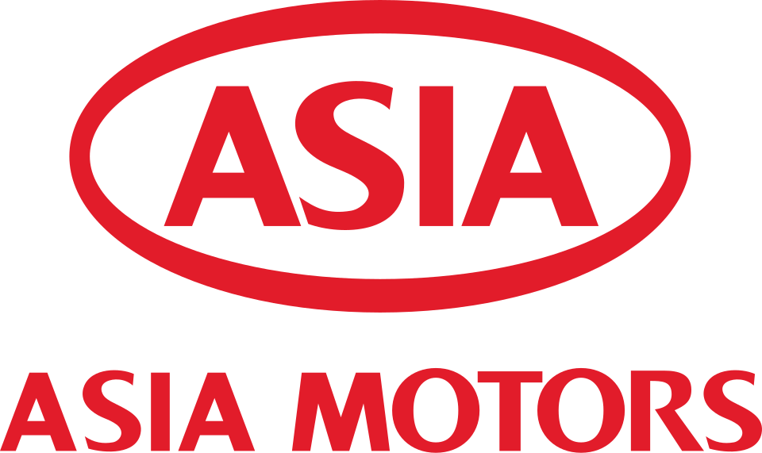

아시아자동차공업 Asia Motors
아시아자동차공업(Asia Motors)은 1965년 대한민국의 자동차 공업을 육성하고자 설립된 자동차 제조 기업이다. 주로 버스와 트럭 등 다양한 차량을 생산했다.
최종 업데이트

아시아자동차공업은 어떤 브랜드인가
이 회사는 1970년에 첫 모델인 세단 피아트 124를 선보이며 국내 자동차 시장의 경쟁을 주도했다. 이후 군수용 차량, 대형 버스, 트럭 생산에 집중했으며, 내방동과 안청동에 생산 라인을 운영했다.
여러 차례 경영권이 바뀌는 과정을 거쳤고, 1999년 기아자동차에 흡수 합병되며 독립 브랜드로서의 역사는 마무리되었다. 합병 이후에도 일부 생산 라인과 차량 모델은 기아자동차의 계보를 이어갔다.
현재까지 생산 중인 모델은 대형버스 그랜버드가 유일하다.
아시아자동차공업은 어떻게 시작되고 성장했나
아시아자동차공업은 1962년 공포된 자동차 공업 보호 육성법에 따라 1965년 7월 2일 전라남도 광주에 이문환에 의해 자본금 8억 2천 8백만 원으로 설립되었다. 1964년 이탈리아 피아트, 프랑스 SIMCA 등과 차관 협정을 체결했다.
1969년 경영이 악화되어 동국제강에 매각되었으며, 1976년 기아산업에 다시 인수되었다. 1981년 자동차공업 합리화 조치로 중·소형 트럭 생산을 독점하게 되었고, 1986년 조치 해제 이후에는 군수용 차량과 대형 버스, 트럭을 자체 브랜드로 판매했다.
아시아자동차공업의 브랜드 아이덴티티는 무엇인가
이 브랜드는 대한민국의 자동차 공업 초기 육성 정책에 기반하여 설립되었으며, 군수용 차량과 대형 상용차량 생산에 강점을 보였다. 잦은 모기업 변경과 인수합병을 겪으며 최종적으로 기아자동차에 통합되었다.
아시아자동차공업의 대표 제품과 서비스는 무엇인가
아시아자동차공업은 지금 어떤 상태인가
1997년 기아그룹의 자금난으로 아시아자동차공업은 부도 유예 협약 대상 업체로 선정되어 법정 관리를 받았다. 1998년 국제 입찰에서 기아자동차와 함께 현대자동차에 인수되었다.
이후 1999년 6월 30일 기아자동차에 흡수 합병되며 독립 법인이 소멸했다. 합병 후에도 광주 공장에서는 군수용 차량을 생산하고 있으며, 과거 생산했던 차종들 중 1994년에 출시된 대형버스 그랜버드만이 현재까지 생산을 이어가고 있다.
타우너, 콤비, 코스모스 등 다수의 모델은 기아자동차 브랜드로 변경된 후 단종되었다.
아시아자동차공업 로고는 어떻게 변해왔나
자주 묻는 질문
아시아자동차공업는 어느 나라 브랜드인가요?
아시아자동차공업는 한국의 모빌리티 브랜드입니다.
아시아자동차공업는 언제 설립되었나요?
아시아자동차공업는 1965년 설립되었습니다.
아시아자동차공업의 브랜드 아이덴티티는 무엇인가요?
이 브랜드는 대한민국의 자동차 공업 초기 육성 정책에 기반하여 설립되었으며, 군수용 차량과 대형 상용차량 생산에 강점을 보였다.
아시아자동차공업의 대표 제품은 무엇인가요?
아시아자동차공업은 첫 제품으로 피아트 124 세단을 선보였다.
아시아자동차공업는 현재 어떤 상태인가요?
1997년 기아그룹의 자금난으로 아시아자동차공업은 부도 유예 협약 대상 업체로 선정되어 법정 관리를 받았다.
아시아자동차공업의 본사는 어디에 있나요?
아시아자동차공업의 본사는 광주광역시에 있습니다(위키데이터 기준).
아시아자동차공업의 모기업은 어디인가요?
아시아자동차공업의 모기업은 기아입니다(위키데이터 기준).
출처와 검증
아시아자동차공업 관련 참고: 공식 웹사이트 · 위키데이터 Q484849 · 한국어 위키백과 · 영어 위키백과. 브랜드명은 한글과 원어를 함께 표기하되 데이터에 없는 표기는 만들지 않습니다. 기원 국가·설립연도는 검수된 정의문에서 확인된 값을 우선하고, 없을 때만 공식 웹사이트 URL이 일치하는 위키데이터 개체의 값을 씁니다. 위키데이터 값은 2026-09-07 기준입니다.